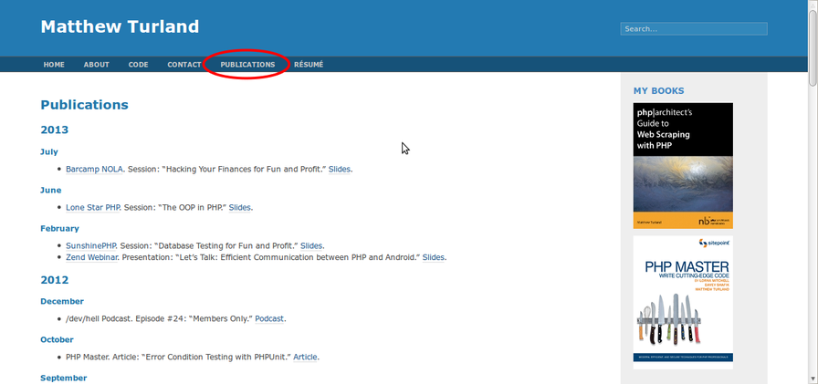
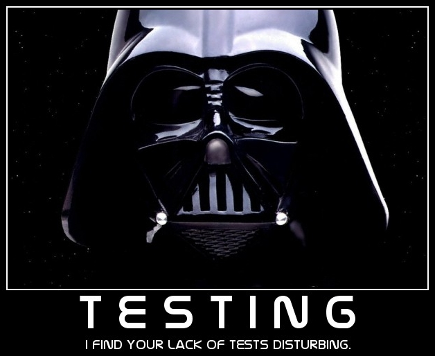
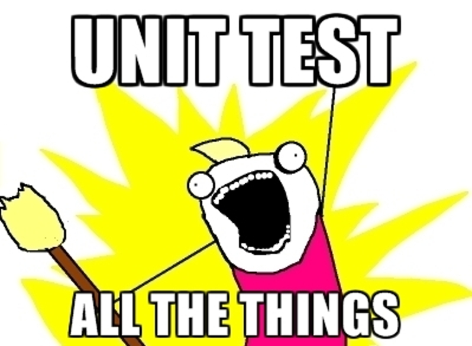
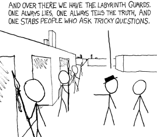
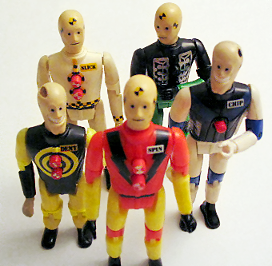

Unit Testing JavaScript
with QUnit and Sinon
Matthew Turland
(Use arrows to navigate between slides.)
There will be slides
Publications section of http://matthewturland.com
I co/wrote these


</ShamelessPlug>
Got tests?
Enough said
What do unit tests do?
- Execute a unit of code in isolation from other code
- Perform assertions against code behavior
- Describe intended use cases of code
What can unit tests verify?
- Behavior of new code is functionally correct
- Code refactoring does not affect code behavior
- Some environmental changes do not affect code behavior
What is not a unit test?
Any test where the results can be impacted by...
- behavior of code other than the code under test
- changes to external dependencies such as a filesystem, database server, or caching server
QUnit defined
QUnit is a powerful, easy-to-use JavaScript unit testing framework. It's used by the jQuery, jQuery UI and jQuery Mobile projects and is capable of testing any generic JavaScript code, including itself!
QUnit was originally developed by John Resig as part of jQuery... At the time it still depended on jQuery. A rewrite in 2009 fixed that, and now QUnit runs completely standalone.~ http://qunitjs.com
QUnit basic demo
- Hide passed tests - useful when a lot of tests pass and only a few fail; enable with
QUnit.config.hidepassed = true; - Check for Globals - fails any tests that add or change properties of the
windowobject; enable withnoglobals=1in query string - No try-catch - useful for debugging native exceptions by preventing them from being caught; enable with
notrycatch=1in query string
Test organization
Demo (see also: Cookbook and API documentation)
- Individual test cases
test(title[, expected], test)
- Grouping test cases
module(name[, lifecycle])
Equality assertions
Demo (see also: Intro to Unit Testing and API documentation)
- Non-strict scalar equality
equal(actual, expected, message)notEqual(actual, expected, message)
- Type-strict scalar equality
strictEqual(actual, expected, message)notStrictEqual(actual, expected, message)
- Type-strict composite equality
deepEqual(actual, expected, message)notDeepEqual(actual, expected, message)
Miscellanous assertions
- Comparison for truthiness
ok(state, message)
- Checking for a thrown exception
throws(block, expected, message)

Real world example
Demo (lifted from Intro to Unit Testing)
Injection for time-based tests
Injection for DOM-based tests
Parameterize plugin
- GitHub repo
- Pros
- Featureful, particularly for derivation of parameter sets
- Cons
- Adds complexity and verbosity beyond a minimal use case
- Common test name is used for all parameter sets
Data provider plugin
- GitHub repo
- Pros
- Concise, straightforward usage
- Different test name per data set
- Fairly analogous to PHPUnit data providers
- I helped to implement it </ShamelessPlug>
- Cons
- Minimal feature set, no data set derivation support
- Less explicit correlation between data set members and test callback parameters
Sinon
Standalone test spies, stubs and mocks for JavaScript.~ http://sinonjs.org
No dependencies, works with any unit testing framework.
Spies
A test spy is a function that records arguments, return value, the value of this and exception thrown (if any) for all its calls... Test spies are useful to test both callbacks and how certain functions/methods are used throughout the system under test.~ Sinon.JS - Documentation
Stubs
Test stubs are functions (spies) with pre-programmed behavior. They support the full test spy API in addition to methods which can be used to alter the stub's behavior... When wrapping an existing function with a stub, the original function is not called.~ Sinon.JS - Documentation

Testing Synchronous Callbacks
Fake timers is a synchronous implementation of
setTimeout and friends that ... can overwrite the global functions
... to allow you to more easily test code using them. Fake timers provide a
clock object to pass time, which can also be used to control Date objects
...
~ Sinon.JS - Documentation

Testing Asynchronous Callbacks
Provides a fake implementation of XMLHttpRequest and
provides several interfaces for manipulating objects created by it. Helps with
testing requests made with XHR.
~ Sinon.JS - Documentation
Code Coverage
- Indicates what code is executed by tests
- Should only be used to determine what code is untested
- 100% code coverage != no bugs
- jscoverage is one tool for generating coverage reports
- Pro-tip for OS X Mavericks users: Homebrew has an installation issue with a work-around
Best Practices
- Use prototypes and scope
- Use parameters and return values, minimize side effects
- Inject dependencies, callbacks, and DOM wrapper elements
- Test public behavior, not internals
- Keep functions / methods short and covered by tests
Feedback
That's All, Folks
- Questions? Comments? Discussion?
- http://www.blopboard.com
- http://matthewturland.com (slides will be posted here!)
- me@matthewturland.com
- @elazar on Twitter
- Elazar on Freenode
- Go forth and test!